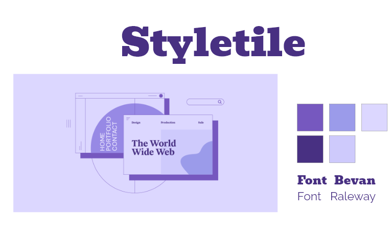
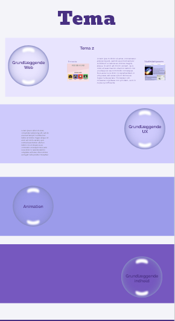
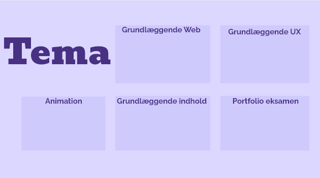
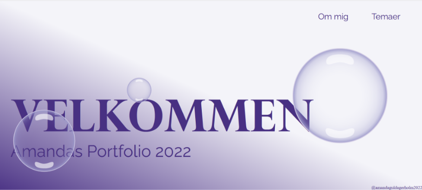

Eksamen
Tema 6
Formålet med opgaven at udarbejde en portfolio website, ved at bruge de redskaber vi har lært i løbet af semestret.
Portfolio eksamen
Min ide var at tilføje en form for animation til sitet, da det er en metode som jeg synes er sjov at lege med i tema 4. Jeg gik med et bobble tema og arbejdet mig videre fra det. Mit fokus var at følge gestaltloven og udarbejde min site efter dem. Så jeg har arbejdet med grids og at farve til hvert tema så man har nemt ved at se de forskellige dele.
-Xd-



